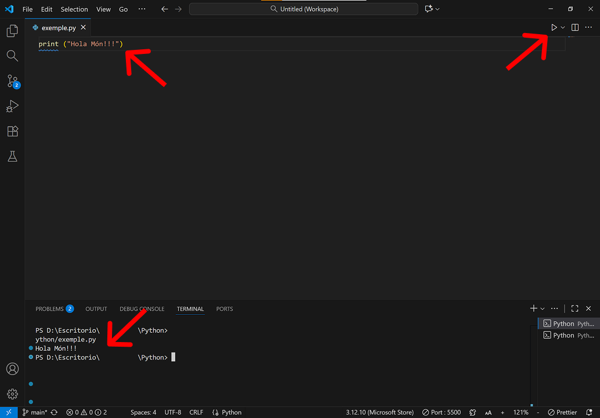
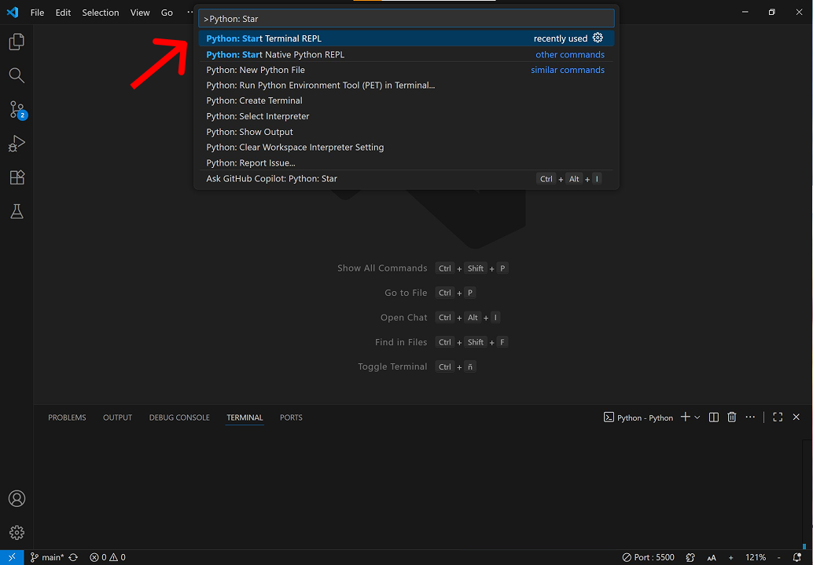
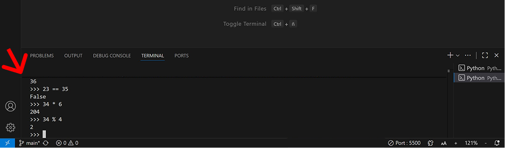
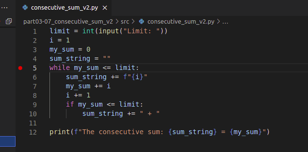
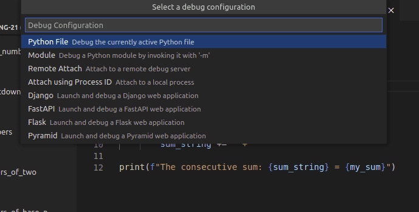
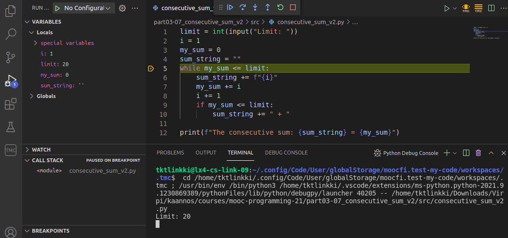
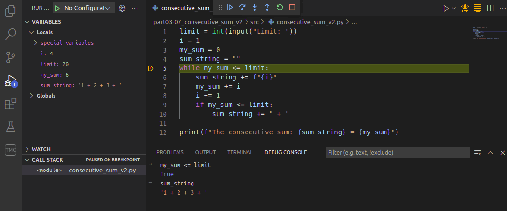

L'IDE Visual Studio Code
Objectius d'aprenentatge
- Utilitzar l'editor Visual Studio Code per completar exercicis del curs
- Familiaritzar-se amb l'intèrpret interactiu de Python i executar-hi codi
Introducció a Visual Studio Code
Fins ara, tots els exercicis d'aquest curs s'han completat directament a les pàgines del curs mitjançant editors integrats al navegador. Programar al navegador és molt adequat per als primers passos en programació, però ara és el moment de començar a utilitzar un editor separat especialment pensat per programar.
Hi ha desenes d'editors diferents adequats per a la programació. En aquest curs farem servir Visual Studio Code, un editor que ha guanyat molta popularitat en els darrers anys.
Instal·la ara el Visual Studio Code al teu ordinador. També pot ser necessari instal·lar Python i l'extensió de Python per a Visual Studio Code.
Consulta la guia d'instal·lació i execució de tots aquests elements. Llegeix les instruccions sobre com treballar i enviar els exercicis, i després completa la tasca següent:
Exercici: Hola Visual Studio Code
Escriu un programa que pregunti a l'usuari quin editor està fent servir. El programa ha de continuar preguntant fins que l'usuari escrigui Visual Studio Code.
Exemple de funcionament esperat:
Editor: Emacs no és bo Editor: Vim no és bo Editor: Word horrible Editor: Atom no és bo Editor: Visual Studio Code una elecció excel·lent!
Si l'usuari escriu Word o Notepad, el programa ha de respondre amb horrible. Altres editors no acceptables han de rebre la resposta no és bo.
El programa ha de ser insensible a majúscules i minúscules. És a dir, la mateixa entrada escrita en minúscules, majúscules o combinada ha de produir la mateixa resposta.
Editor: NOTEPAD horrible Editor: viSUal STudiO cODe una elecció excel·lent!
Pista: La manera més senzilla d'aconseguir-ho és convertir totes les lletres a la mateixa mida. El mètode lower() d'una cadena converteix tot el text a minúscules. Exemple d'ús:
meu_text = "Visual Studio CODE"
if "visual studio code" == meu_text.lower():
print("aquesta era la cadena que buscava!")Executar codi
En Visual Studio Code, la manera més fàcil d'executar el teu codi és fent clic al triangle de la part superior dreta. A vegades pot passar que algun programa quedi executant-se en segon pla, potser esperant una entrada d'usuari o atrapat en un bucle infinit, sense que te n'adonis. Només ho notaràs quan intentis executar el següent programa i aquest no s'executi perquè el procés anterior encara està ocupant recursos.
Una solució ràpida és prémer les tecles Control+C alhora, cosa que atura l'execució de qualsevol procés actiu. El següent programa ja s'hauria d'executar correctament.

L'intèrpret interactiu de Python
Una de les eines més importants per a qualsevol programador de Python és l'intèrpret interactiu de Python.
Podem iniciar l'intèrpret dins de Visual Studio Code. Primer, executem la comanda >Python: Start REPL Terminal en la barra superior. Això obrirà una secció anomenada Terminal a la part inferior. Allà pots escriure python3 (o python).

Intèrpret de Python

L'intèrpret permet executar codi Python línia per línia a mesura que l'escrius. Quan introdueixes una línia i prems Enter, aquesta s'executa immediatament i mostra el resultat:
>>> t = [1,2,3,4,5] >>> for numero in t: ... print(numero) ... 1 2 3 4 5 >>> def valor_absolut(numero): ... if numero < 0: ... numero = -numero ... return numero ... >>> x = 10 >>> y = -7 >>> valor_absolut(numero) Traceback (most recent call last): File "<stdin>", line 1, in <module> NameError: name 'numero' is not defined >>> valor_absolut(x) 10 >>> valor_absolut(y) 7 >>>
L'intèrpret és molt útil per fer petites comprovacions, provar funcions o mètodes, o verificar si existeixen:
>>> "TextText".toupper() Traceback (most recent call last): File "<stdin>", line 1, in <module> AttributeError: 'str' object has no attribute 'toupper' >>> "TextText".upper() 'TEXTTEXT' >>>
Si necessites un mètode i gairebé recordes el seu nom, pot ser més ràpid utilitzar la funció dir() en comptes de buscar-lo a Internet. Et mostra quins mètodes estan disponibles per a un objecte determinat:
>>> dir("això és una cadena")
['__add__', '__class__', '__contains__', '__delattr__', '__dir__', '__doc__',
'__eq__', '__format__', '__ge__', '__getattribute__', '__getitem__', '__getnewargs__', '__gt__',
'__hash__', '__init__', '__init_subclass__', '__iter__', '__le__', '__len__', '__lt__',
'__mod__', '__mul__', '__ne__', '__new__', '__reduce__', '__reduce_ex__', '__repr__',
'__rmod__', '__rmul__', '__setattr__', '__sizeof__', '__str__', '__subclasshook__',
'capitalize', 'casefold', 'center', 'count', 'encode', 'endswith', 'expandtabs', 'find',
'format', 'format_map', 'index', 'isalnum', 'isalpha', 'isascii', 'isdecimal', 'isdigit',
'isidentifier', 'islower', 'isnumeric', 'isprintable', 'isspace', 'istitle', 'isupper', 'join',
'ljust', 'lower', 'lstrip', 'maketrans', 'partition', 'replace', 'rfind', 'rindex', 'rjust',
'rpartition', 'rsplit', 'rstrip', 'split', 'splitlines', 'startswith', 'strip', 'swapcase',
'title', 'translate', 'upper', 'zfill']
Com pots veure, les cadenes de text en Python tenen molts mètodes disponibles. En aquest punt pots ignorar els que contenen guions baixos al nom, però la resta poden ser-te útils.
Les llistes tenen menys mètodes:
>>> dir([]) ['__add__', '__class__', '__contains__', '__delattr__', '__delitem__', '__dir__', '__doc__', '__eq__', '__format__', '__ge__', '__getattribute__', '__getitem__', '__gt__', '__hash__', '__iadd__', '__imul__', '__init__', '__init_subclass__', '__iter__', '__le__', '__len__', '__lt__', '__mul__', '__ne__', '__new__', '__reduce__', '__reduce_ex__', '__repr__', '__reversed__', '__rmul__', '__setattr__', '__setitem__', '__sizeof__', '__str__', '__subclasshook__', 'append', 'clear', 'copy', 'count', 'extend', 'index', 'insert', 'pop', 'remove', 'reverse', 'sort'] >>>
Provem alguns mètodes. reverse() i clear() semblen prometedors:
>>> nombres = [1,2,3,4,5] >>> nombres.reverse() >>> nombres [5, 4, 3, 2, 1] >>> nombres.clear() >>> nombres []
Com pots veure, aquests mètodes fan exactament el que el seu nom indica.
Observa que l'intèrpret no mostra cap resultat quan executes nombres.reverse(). Això passa perquè només mostra alguna cosa si la línia de codi té un valor de retorn. En aquest cas, reverse() no en retorna cap.
En l'exemple anterior vam imprimir el valor de la llista nombres simplement escrivint el nom de la variable. De fet, rarament cal escriure print() dins l'intèrpret, tot i que pots fer-ho si vols.
Recorda tancar l'intèrpret quan acabis. Les ordres quit() o exit() el tanquen, així com la combinació Control+D (Linux/Mac) o Control+Z (Windows). Això és especialment important a Visual Studio Code, ja que intentar executar un altre programa de Python mentre l'intèrpret encara està actiu provoca un missatge d'error confús.
El depurador integrat
Ja hem dedicat força temps a desenvolupar habilitats de depuració, principalment mitjançant sentències print. L'editor Visual Studio Code ofereix una altra eina molt útil: el depurador visual integrat.
Per començar a depurar, primer has de definir un punt de parada (breakpoint) al teu codi. Un punt de parada és un lloc on el depurador atura l'execució del programa. Pots establir-lo fent clic al marge esquerre de qualsevol línia.
L'exemple següent és un intent lleugerament erroni de resoldre un exercici anterior ("La suma de nombres consecutius"). Hi ha un punt de parada a la línia 5.

Després d'establir-lo, selecciona Inicia depuració al menú Executa. Això obrirà una llista d'opcions: selecciona Fitxer de Python.

Això inicia el depurador, que executa el codi fins arribar al punt de parada. Si el teu codi demana una entrada d'usuari, recorda escriure-la al terminal.

A l'esquerra apareixerà la vista de variables, que mostra els valors actuals de totes les variables actives. Pots avançar en l'execució línia per línia fent clic a la fletxa avall anomenada Step into.

El depurador també disposa d'una pestanya Consola de depuració, on pots avaluar expressions amb els valors actuals de les variables. Per exemple, pots comprovar el valor d'una expressió booleana dins la condició d'un bucle.

Pots definir diversos punts de parada dins el teu programa. Quan l'execució s'atura, pots reprendre-la fent clic al triangle blau. El programa continuarà fins al següent punt de parada.
El depurador visual integrat és una excel·lent alternativa a la depuració amb print. Depèn de tu quina prefereixis utilitzar més endavant. Cada programador té les seves pròpies preferències, però sempre és bona idea provar diferents opcions abans de quedar-te amb una sola.
Conceptes clau
- IDE: Entorn Integrat de Desenvolupament (Integrated Development Environment)
- Visual Studio Code: editor de codi popular amb múltiples extensions
- Execució de codi: triangle superior dret per executar programes
- Control+C: aturar execucions que queden bloquejades
- Intèrpret interactiu: execució de codi Python línia per línia
- Terminal: finestra per executar comandes i l'intèrpret
- dir(): funció per llistar mètodes disponibles d'un objecte
- Depuració: procés de trobar i corregir errors en el codi
- Punt de parada (breakpoint): lloc on el depurador atura l'execució
- Step into: avançar línia per línia en la depuració
- Vista de variables: panell que mostra valors actuals de variables
- Consola de depuració: on s'avaluen expressions durant la depuració